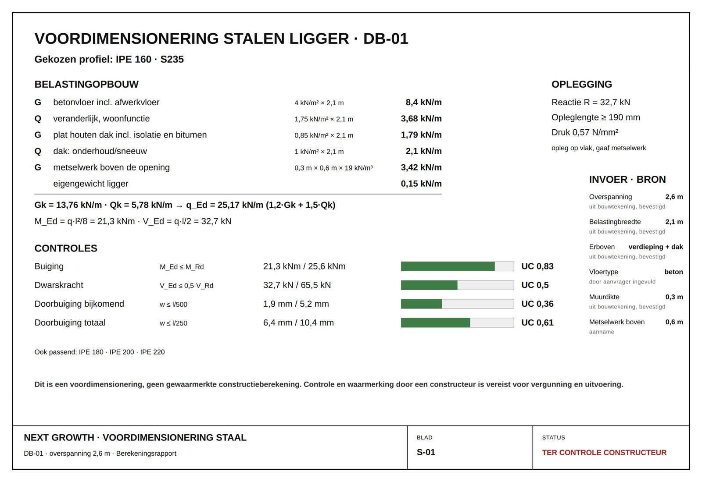

Wat kost je verbouwing? Tel het op in plaats van te gokken.
Dit is een live demo van een verbouwkosten-calculator die Next Growth bouwt voor aannemers en bouwbedrijven. De meeste kostencalculators vragen om je postcode en geven je daarna één bedrag terug waar je niets aan hebt. Deze rekent zoals een calculator in de bouw het doet: post voor post. Je vinkt aan wat er moet gebeuren (een uitbouw, een dakkapel, stucwerk, een nieuwe vloer, vloerverwarming, de badkamer, de elektra), vult de aantallen in en ziet de bandbreedte voor het geheel. Inclusief de drie posten die in offertes het vaakst ontbreken: regio, onvoorzien en leges.
Gratis en zonder registratie. De berekening draait volledig in je eigen browser; er gaat niets naar een server.

De calculator
Vink aan wat er moet gebeuren.
Vul alleen in wat op jou van toepassing is; lege regels tellen niet mee. Weet je een aantal nog niet precies, vul dan een ruwe schatting in. Voor een budget is de orde van grootte belangrijker dan de decimaal. De optelling loopt meteen mee, en elke groep houdt zijn eigen tussentotaal bij.
De uitkomst lezen
Een bandbreedte zegt meer dan een bedrag.
Wie je één getal geeft voor een verbouwing die hij niet gezien heeft, verkoopt je zekerheid die niet bestaat. Daarom eindigt deze calculator met twee getallen. Zo gebruik je ze.
Waar de onderkant bij hoort
Eenvoudige uitvoering, standaard materialen, een woning waar niets tegenvalt en een werkplek die goed bereikbaar is. Ruime kamers werken in je voordeel: hoe groter het vlak, hoe lager de prijs per vierkante meter.
Waar de bovenkant bij hoort
Maatwerk, luxe afwerking, een pand van voor de oorlog, kleine ruimtes met veel hoeken, werken in bewoonde staat en een achtertuin waar geen kruiwagen langs kan. In de praktijk komen die dingen vaak samen.
Wat er niet in zit
- Steigerwerk en verticaal transport
- Tijdelijke huisvesting, verhuizen en opslag
- Herstel van tuin, bestrating en oprit
- De verplichte asbestinventarisatie vooraf
- Wat er achter de muur blijkt te zitten
Btw: 21% en 9% door elkaar
Alle bedragen zijn inclusief btw. Voor schilderen, stukadoren, behangen en het aanbrengen van isolatiemateriaal geldt bij woningen ouder dan twee jaar het verlaagde tarief van 9%; isolatiemateriaal zelf blijft 21%. Dat verschil zit al in de richtprijzen. Zie je op een offerte overal 21% staan bij een oud huis, vraag daar dan naar.



Van indicatie naar echte prijs
Vijf stappen, en je weet waar je aan toe bent.
Een budget bepalen is stap één. Daarna wil je offertes kunnen beoordelen zonder dat je de bouw in hoeft te duiken. Zo kom je daar.
-
01
Vink aan wat er moet gebeuren
Loop de negen groepen langs en vul per werkzaamheid een aantal in: vierkante meters voor vloeren en stucwerk, strekkende meters voor een dakkapel of keuken, stuks voor een groepenkast of een doorbraak. Alleen wat je invult telt mee, en je kunt eindeloos schuiven.
Weet je een oppervlakte niet? Meet de kamer grofweg op en rond naar boven af. Voor een budget is een halve meter verschil onbelangrijk; een vergeten post van vijfduizend euro is dat wel.
-
02
Zet de drie opslagen goed
Regio, onvoorzien en leges. Samen zijn ze vaak goed voor een kwart van het eindbedrag, en juist die drie ontbreken in de meeste calculators. Dat verklaart waarom mensen zeggen dat hun verbouwing “veel duurder uitviel dan berekend”.
In Brabant en Gelderland laat je de regio-opslag uit staan: die geldt voor de Randstad, waar tarieven 20 tot 30% hoger liggen.
-
03
Druk het kostenoverzicht af
Eén A4 met elke post, het aantal, de eenheidsprijs, het subtotaal en de bandbreedte voor het geheel. Onderaan staan de gebruikte bronnen en de voorbehouden, inclusief wat er níet in zit.
Neem dat vel mee naar het keukentafelgesprek. Een aannemer die ziet dat je weet wat de posten zijn, rekent anders dan een aannemer die denkt dat je alleen op de onderste regel let.
-
04
Leg offertes ernaast, post voor post
Vergelijk niet de eindbedragen maar de regels. Een offerte die veel lager uitkomt dan je indicatie mist meestal iets: het stucwerk, de afvoer, het herstel van de vloer na de doorbraak. Een offerte die er ver boven zit, mag dat uitleggen.
Let vooral op wat er niet staat. Steiger, container, en het aanwerken na de sloop zijn de klassieke drie.
-
05
Stel de echte uitvoering samen in een configurator
Voor een uitbouw, dakopbouw of badkamer hoef je geen landelijk gemiddelde te gebruiken: in een configurator stel je de werkelijke uitvoering samen en zie je de richtprijs van precies díe samenstelling, met beeld erbij. Zit er een doorbraak in je plan, dan maak je de balkberekening online, inclusief de kolommen als de hele gevel opengaat. Next Growth bouwt die configurators voor bouwbedrijven; hieronder staan de demo's.
De rest van je verbouwing hou je met dit overzicht in de hand.
Van richtprijs naar jouw prijs
Voor deze onderdelen rekent een configurator je eigen samenstelling door.
De calculator hierboven werkt met landelijke richtprijzen. Met een configurator op de site van een bouwbedrijf kan het preciezer: je stelt het onderdeel samen en ziet de richtprijs van je eigen keuzes, met een beeld bij je eigen woning. Probeer het in de demo's van Next Growth.
Ter controle
Uurtarieven in de bouw.
Staat er op je offerte regiewerk in plaats van een vaste prijs, dan wil je weten of het tarief klopt. Dit zijn de gangbare tarieven voor 2026. Let op: dit zijn de enige bedragen op deze pagina exclusief btw, zoals in de bouw gebruikelijk.
| Vakman | Per uur, excl. btw |
|---|
Verantwoording
Waar deze bedragen vandaan komen.
Geen enkel bedrag in deze calculator is een eigen schatting. Elk bereik komt uit een openbaar kostenoverzicht, en op het afgedrukte overzicht staat per verbouwing welke bronnen zijn gebruikt. In een versie voor een bouwbedrijf kunnen dit ook de eigen prijzen van dat bedrijf zijn.
Over de btw-tarieven: zie de toelichting van de Belastingdienst over werkzaamheden aan woningen ouder dan 2 jaar.
Vragen die hier vaak op volgen
Over verbouwkosten.
Wat kost een verbouwing gemiddeld?
Landelijke kostenoverzichten noemen voor een complete woningrenovatie bedragen van ongeveer €60.000 tot €150.000 en voor alleen de begane grond zo'n €30.000 tot €60.000. Aan zulke gemiddelden heb je weinig: ze zeggen niets over je huis en je wensenlijst. De calculator hierboven rekent daarom van onderaf op: per werkzaamheid een aantal en een richtprijs, opgeteld tot een bandbreedte voor je eigen plan.
Zijn dit prijzen van Next Growth?
Nee, en dat staat ook op het overzicht. Het zijn richtprijzen uit landelijke kostenoverzichten, met per regel een bronvermelding. Het is bedoeld om een budget te bepalen en offertes te beoordelen. Het is geen offerte en geen aanbod. Next Growth bouwt deze calculator als demo voor bouwbedrijven. Voor uitbouw, dakopbouw, badkamer en de balkberekening krijg je in de demo-configurators een richtprijs voor precies jouw samenstelling.
Waarom krijg ik een bandbreedte en geen bedrag?
Omdat het verschil tussen eenvoudig en luxe werk bij vrijwel elke post een factor twee is, en omdat niemand die je woning niet gezien heeft weet wat er achter de muren zit. Eén bedrag zou precisie suggereren die er niet is. Gebruik het midden voor je budget en houd rekening met de bovenkant.
Zit de btw er al in?
Ja, alle bedragen in de calculator zijn inclusief btw en inclusief arbeid. Voor schilderen, stukadoren, behangen en het aanbrengen van isolatiemateriaal geldt bij woningen ouder dan twee jaar het verlaagde tarief van 9%; het isolatiemateriaal zelf valt onder 21%. Alleen de uurtarieven hierboven staan exclusief btw.
Hoeveel moet ik reserveren voor onvoorzien?
In de bouw is 5 tot 10% van de bouwsom de gebruikelijke vuistregel. Bij woningen van voor 1970 is 10% realistischer dan 5%, en bij een casco-aanpak waarbij alles opengaat mag het gerust 15% zijn. Het is geen bronprijs maar ervaring: de kosten die je niet zag aankomen, komen bijna altijd.
Waarom lopen de legeskosten voor de vergunning zo uiteen?
Omdat elke gemeente haar eigen legesverordening heeft. Bij dezelfde bouwsom rekent de ene gemeente 0,9% en de andere 8,4%. Bij een verbouwing van een ton scheelt dat duizenden euro's. De calculator rekent daarom met die volle landelijke spreiding. Wil je het precies weten, kijk dan in de legesverordening van je eigen gemeente.
Blijven mijn ingevulde gegevens bewaard?
Je invoer blijft in je eigen browser staan zodat je later verder kunt, maar er gaat niets naar een server en er wordt niets opgeslagen. Pas als je zelf een offerte aanvraagt, komt er een mens in beeld.
Weet je je budget? Dan is ontwerpen de volgende stap.
Voor de uitbouw, de dakopbouw en de badkamer stel je in de demo-configurators in tien minuten samen wat je werkelijk wilt, met beeld en richtprijs, en zonder dat je ergens aan vastzit.
Terugbelverzoek
Liever even bellen over zo'n calculator?
Laat je nummer achter, dan bellen we je dezelfde werkdag terug om je plan door te nemen. Geen verkooppraatje, gewoon antwoord.
- Binnen één werkdag gebeld
- Direct antwoord op kosten en planning
- Vrijblijvend, je zit nergens aan vast
Liever zelf bellen? 06 83 90 21 92
2 velden · 15 seconden